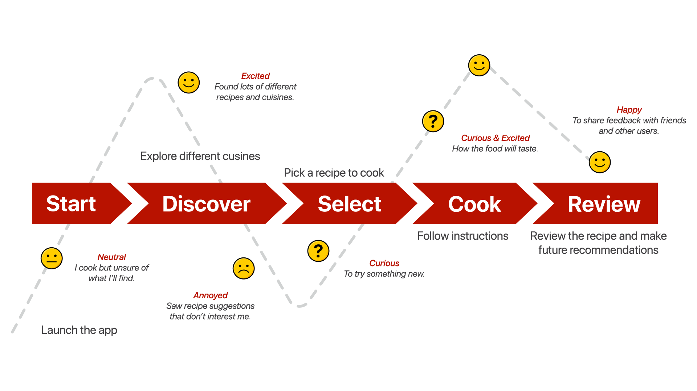
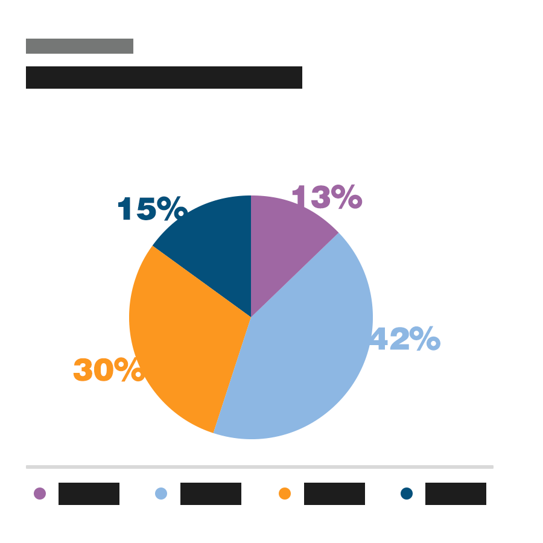
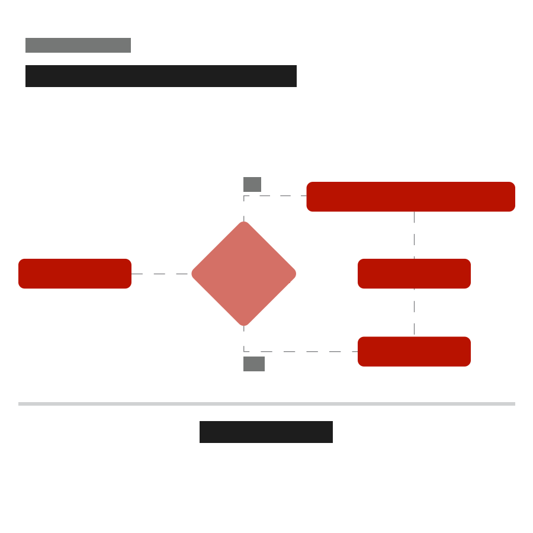
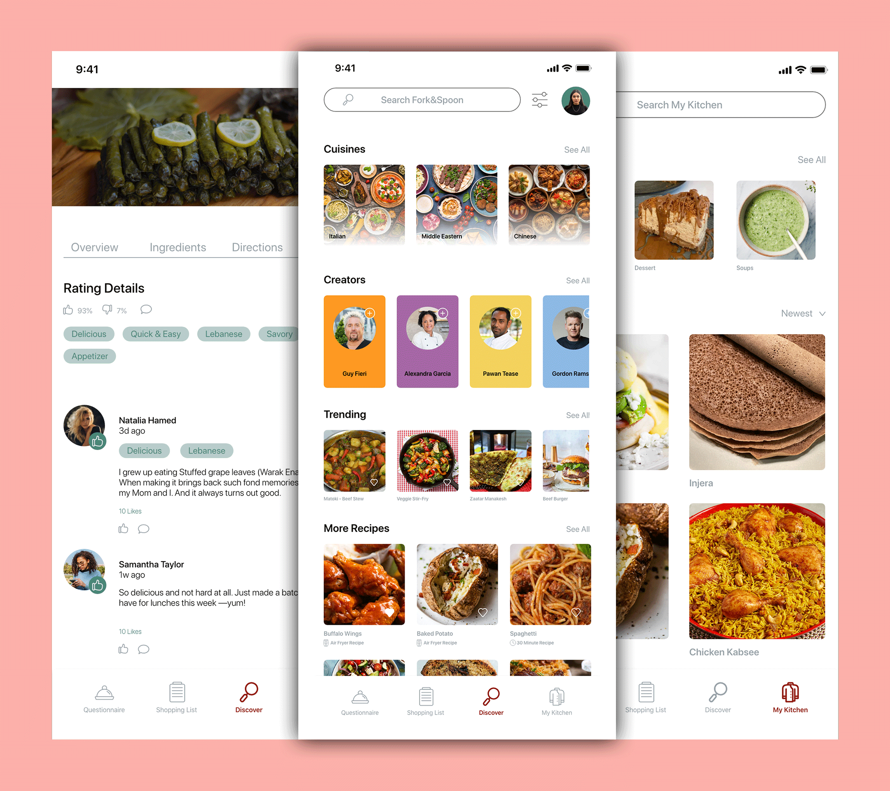

The Objective
The objective was to create an intuitive cooking platform that helps users discover diverse, reliable recipes from around the world, access healthy and diet-specific options, prepare quick meals on busy days, plan efficient meal prep, and receive recommendations tailored to their preferences and lifestyle.
How I got here
The Process
Understand
Empathise & Define
Research, interviews, and framing the real problem.
Explore
Ideate & Prototype
Turning insight into concrete design directions.
Materialise
Test & Implement
Refining the design against real user feedback.





Outcomes
The Results
83%
Have dietary restrictions or allergies
This validated advanced filtering — vegetarian, halal, gluten-free, and more — as a core feature, not an add-on.
61%
Increase in sign-up completion
Users proved comfortable managing groceries digitally, validating an integrated grocery list synced to saved recipes and meal plans.
77%
Own an air fryer
A surprisingly high number — this supported appliance-specific filters and air-fryer recipe categories to match modern cooking habits.
The problem wasn't a lack of recipes — it was a lack of structure, personalisation and guided support throughout the cooking process.


"Fork and Spoon has completely transformed how I cook at home. The app is easy to navigate, even for someone like me who isn’t very tech-savvy, and it makes discovering new recipes and planning meals effortless and enjoyable."
Harold
Deep Dive
The Brief
Business & User Goals
The goal was a highly engaging cooking platform that increases retention through personalisation, encourages repeat use via meal planning tools, and differentiates through structured guidance rather than recipe volume alone.
Users want to:
- Reduce the stress of deciding what to cook
- Maintain dietary preferences without extensive searching
- Cook efficiently, even with limited time
- Feel confident trying new recipes
The Process
Research ran in three phases: user surveys for demographics, cooking habits, and feature expectations; behavioural analysis of how users currently manage grocery lists and meal planning; and a competitive review to spot gaps in personalisation and structured guidance.
Major Revelations
The biggest revelation: the problem wasn't a lack of recipes, it was a lack of structure and personalisation. Users don't struggle to find food content — they struggle to:
- Filter content effectively
- Plan meals in advance
- Align recipes with dietary needs
- Stay consistent throughout the week
This shifted the direction from a "recipe discovery app" to a guided cooking and meal-planning ecosystem.
How Research Steered the Project
- Introduced dietary-first onboarding personalisation/li>
- Designed dual-format recipe guidance (video + step-by-step)
- Implemented a weekly meal planner
- Integrated smart grocery list generation
- Added appliance filters, including an air fryer category
- Included built-in cooking timers
The product moved from content-heavy to decision-support focused.
Time, Struggles & Lessons
With more time, I'd have usability-tested the meal planning flow further, and expanded personalisation logic through AI-based recommendations.
The key challenge was avoiding feature overload — research showed strong demand for many tools, but adding everything risked cognitive overload. The biggest lesson: clarity beats complexity, even in feature-rich products.
Final Thoughts
The product evolved from a standard cooking app into a structured, personalised cooking companion. By grounding every major decision in user research, the experience became intuitive and supportive — empowering users to confidently discover, plan, shop, and cook.